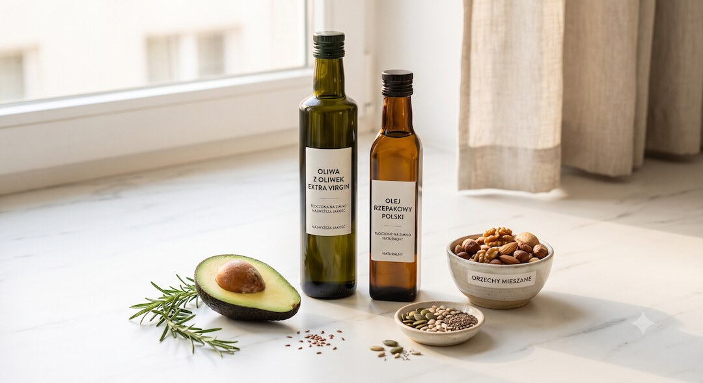

Każdy z tych nagłówków słyszałeś sto razy: owoce tuczą, bo mają cukier; cardio podbija kortyzol i robi brzuch; węglowodany to przebrany cukier; tłuszcz zatyka tętnice jak rura w zlewie; sól podnosi ciśnienie i zabija. Brzmi sensownie, każdy ma w sobie cząstkę prawdy — i właśnie dlatego tak łatwo się na to nabrać. Sam bym się przy niejednym z nich zatrzymał. Problem w tym, że każdy z tych mitów bierze jeden składnik, robi z niego czarny charakter i każe Ci go wycinać. A prawda jest nudniejsza: jedzenie Cię nie truje — trzeba je tylko ogarnąć z głową. Rozłóżmy te pięć po kolei, na spokojnie. To materiał edukacyjny, nie zalecenie lekarskie.
Szybka odpowiedź
Półprawda: po 50-tce owoce, węglowodany, tłuszcz, oleje roślinne i sól nie trują same z siebie, ale problem zaczyna się wtedy, gdy zamiast całych produktów regularnie dominują soki, słodycze, biała mąka, tłuszcze trans, fast food i sól z gotowców przez większość tygodnia, bez kontroli porcji i białka.
Kluczowe wnioski
- Całe owoce nie tuczą tak, jak straszą — w dużych badaniach wiążą się z niższym ryzykiem cukrzycy typu 2, a to soki idą w drugą stronę.
- Cardio nie „robi brzucha” przez kortyzol — regularny ruch aerobowy realnie zmniejsza tłuszcz brzuszny i trzewny.
- Węglowodany to nie jeden worek: pełne ziarno wiąże się z niższym ryzykiem cukrzycy, a problemem są cukier dodany i rzeczy mocno przetworzone.
- Zamiana tłuszczów nasyconych na oleje roślinne obniża ryzyko sercowe o około 30% — oleje roślinne to zalecany zamiennik, nie trucizna.
Skąd się bierze panika, że jedzenie Cię truje?
Bo to chwytliwe i daje proste poczucie kontroli. Wytnij jeden składnik — owoce, węgle, tłuszcz, sól — i niby załatwiasz temat zdrowia jednym ruchem. Nie jesteś naiwny, że to przyciąga uwagę: nasz mózg uwielbia jednego winnego zamiast nudnej prawdy o bilansie i umiarze. Tyle że ciało tak nie działa.
Każdy z tych pięciu mitów ma w sobie okruch prawdy, dlatego brzmi wiarygodnie. Nadmiar cukru dodanego szkodzi. Za dużo soli podnosi ciśnienie. Przetworzone tłuszcze to zły pomysł. Ale z „w nadmiarze szkodzi” zrobiono „truje, więc wytnij całkowicie” — i tu robi się problem, bo razem z bzdurą wyrzucasz rzeczy, które Ci pomagają.
Po 50-tce ta panika kosztuje podwójnie. Wycinasz owoce, pełne ziarno czy dobre oleje, dieta robi się uboga i monotonna, a Ty i tak nie chudniesz, bo problem leżał gdzie indziej. Zamiast szukać jednego wroga, popatrzmy na każdy mit osobno i sprawdźmy, co mówią badania.
Czy od owoców się tyje, bo mają cukier?
Nie, od całych owoców raczej się nie tyje — i to wbrew temu, co mówi straszak o cukrze. W dużych badaniach obejmujących setki tysięcy ludzi wyższe spożycie całych owoców wiązało się z niższym ryzykiem cukrzycy typu 2, a nie wyższym. Co ciekawe, dla soków owocowych zależność była odwrotna.
Sekret tkwi w opakowaniu. W całym owocu cukier jest zamknięty w błonniku i wodzie, więc wchłania się wolniej, a do tego musisz go pogryźć i szybciej czujesz sytość. Wyciśnij sok — wyrzucasz błonnik i zostaje słodki płyn, który pijesz litrami bez najedzenia. To dlatego sok i całe jabłko to z punktu widzenia organizmu dwie różne rzeczy.
Granica prawdy: suszone owoce i soki łatwo przesadzić, bo cukru jest w nich dużo w małej objętości. Ale całego jabłka, garści jagód czy pomarańczy ciężko zjeść tyle, żeby to był problem. W praktyce: jedz owoce w całości, a soku nie traktuj jak napoju do gaszenia pragnienia; przy etykietach pomoże też tekst o ukrytym cukrze po 50-tce.
Czy cardio podnosi kortyzol i robi brzuch?
Nie, cardio nie „robi brzucha” — jest dokładnie odwrotnie. Owszem, podczas wysiłku kortyzol na chwilę rośnie, bo ma uwolnić energię do pracy. Ale po umiarkowanym treningu wraca do normy mniej więcej w godzinę. A regularny ruch aerobowy w badaniach realnie zmniejsza tłuszcz, w tym ten brzuszny i trzewny.
W dużej analizie 116 badań z losowym przydziałem trening aerobowy obniżał masę tłuszczu, obwód talii i ilość tłuszczu trzewnego, a efekt rósł wraz z liczbą minut na tygodniu. Krótki skok kortyzolu w trakcie biegu to nie sygnał „magazynuj tłuszcz na brzuchu” — to normalna reakcja, która mija. Mylenie jednego z drugim to klasyczny błąd.
Granica prawdy: przewlekłe przetrenowanie bez regeneracji potrafi rozregulować oś stresu — ale po 50-tce to rzadszy problem niż kanapa. Co z tego dla Ciebie: ruszaj się regularnie, najlepiej koło 150 minut tygodniowo w umiarkowanym tempie, dorzuć dni na odpoczynek i nie bój się, że marsz albo rower „nakręcą” Ci oponkę; jeśli brzuch jest głównym celem, zobacz jak naprawdę zmniejszać oponkę po 50-tce i jak obniżyć kortyzol bez paniki.
Czy węglowodany to po prostu cukier, od którego się tyje?
Nie, „węglowodany” to nie jeden worek z napisem cukier. Pod tym słowem kryją się i cukierki, i kasza gryczana, i soczewica. Wrzucanie ich do jednego kosza to jak powiedzieć, że woda i wódka to to samo, bo oba są płynne. Badania wyraźnie je rozróżniają.
Pełne ziarno w przeglądach badań wiąże się z niższym ryzykiem cukrzycy typu 2 — w jednej dużej analizie najwyższe spożycie wiązało się z około 20% niższym ryzykiem względem najniższego. Dzieje się tak, bo błonnik i nienaruszona struktura ziarna spowalniają trawienie. Problemem są cukier dodany i mocno przetworzone, oczyszczone węglowodany, a nie pęczak czy fasola.
Granica prawdy: tyjesz od nadmiaru kalorii, a przetworzone węgle łatwo przejeść, bo nie sycą. To realny haczyk. Konkret: stawiaj na pełne ziarno, strączki i całe owoce, a ograniczaj białe pieczywo, słodycze i słodkie napoje. Nie musisz „rzucać węgli” — wystarczy wybrać lepsze.
Czy tłuszcz zatyka tętnice, a oleje roślinne trują?
I tak, i nie — to klasyczna półprawda. Tłuszcz nie oblepia tętnic jak tłuszcz oblepia rurę w zlewie. Miażdżyca to bardziej wnikanie cholesterolu LDL w ścianę naczynia i stan zapalny, nie zwykłe zatykanie tłuszczem z talerza. A oleje roślinne, wbrew modnej panice, nie są trucizną.
Przeciwnie: według stanowiska dużego towarzystwa kardiologicznego zamiana tłuszczów nasyconych na wielonienasycone oleje roślinne obniżała liczbę zdarzeń sercowo-naczyniowych o około 30% — efekt porównywalny z lekami obniżającymi cholesterol. Tłuszcze nasycone podnoszą LDL, a oleje takie jak rzepakowy czy słonecznikowy są właśnie zalecanym zamiennikiem, nie zagrożeniem.
Granica prawdy: tu naukowcy wciąż się spierają o szczegóły, a „roślinne” nie znaczy automatycznie zdrowe — olej kokosowy ma dużo tłuszczu nasyconego, a prawdziwym czarnym charakterem są tłuszcze trans. Na co dzień: gotuj na oleju rzepakowym lub oliwie, ogranicz nadmiar masła i tłustego mięsa, a smażonego na okrągło fastfoodu unikaj niezależnie od oleju.

Czy sól podnosi ciśnienie i zabija?
To znowu półprawda — z mocnym naciskiem na słowo „nadmiar”. Za dużo soli faktycznie podnosi ciśnienie, a jej ograniczanie ciśnienie obniża, im wyższe wyjściowo, tym mocniej. Ale sól sama w sobie nie jest trucizną — to składnik, bez którego organizm nie działa. Cała gra toczy się o ilość.
Liczby są konkretne. W analizie 56 badań zmniejszenie wydalania sodu o 100 mmol dziennie obniżało ciśnienie średnio o około 3,7/0,9 mmHg, a wyższe spożycie sodu wiąże się z większym ryzykiem udaru i chorób serca. Światowa Organizacja Zdrowia zaleca poniżej 5 gramów soli dziennie, a większość z nas zjada mniej więcej dwa razy tyle — głównie z rzeczy przetworzonych.
Granica prawdy: bardzo niskie spożycie soli też bywa przedmiotem sporu i w niektórych grupach, jak część pacjentów z niewydolnością serca, ostre cięcie może nie pomagać. Prosto: nie panikuj nad szczyptą w domowym gotowaniu — tnij sól ukrytą w wędlinach, gotowych daniach i przekąskach; konkretny trening oka znajdziesz w poradniku jak czytać etykiety produktów, i dorzuć produkty bogate w potas, jak warzywa.
Co z tego wynika: jak mądrze jeść po 50-tce?
Wniosek jest jeden i nudny: jedzenie Cię nie truje, a każdy z tych pięciu mitów popełnia ten sam błąd — robi z jednego składnika wroga i każe go wyciąć. Prawda jest mniej efektowna, ale działa lepiej: liczy się ilość, forma i to, co jesz na co dzień, a nie jeden czarny charakter.
Zamiast eliminować, wybieraj mądrzej. Całe owoce zamiast soku, pełne ziarno zamiast białej mąki, oleje roślinne zamiast nadmiaru masła, sól z umiarem zamiast gotowców, ruch zamiast strachu przed kortyzolem. Żaden z tych kroków to nie rewolucja — to drobne, powtarzalne decyzje, które razem robią różnicę dla serca, cukru i wagi; praktyczną bazę daje dieta po 50-tce bez skrajności.
| Popularny mit | Co jest prawdą | Werdykt |
|---|---|---|
| Owoce tuczą przez cukier | Całe owoce wiążą się z niższym ryzykiem cukrzycy; problem to soki i susz w nadmiarze | mit |
| Cardio robi brzuch przez kortyzol | Ruch aerobowy zmniejsza tłuszcz brzuszny; skok kortyzolu jest chwilowy | mit |
| Węglowodany to cukier, od którego się tyje | Pełne ziarno chroni; winne są cukier dodany i przetworzone | półprawda |
| Tłuszcz zatyka tętnice, oleje roślinne trują | Oleje roślinne obniżają ryzyko sercowe; problem to nadmiar nasyconych i trans | półprawda |
| Sól podnosi ciśnienie i zabija | Szkodzi nadmiar; sól jest składnikiem niezbędnym | półprawda |
Kiedy uważać i pójść do specjalisty: jeśli masz nadciśnienie, cukrzycę, chorobę serca lub nerek albo bierzesz leki, konkretne limity soli, węglowodanów czy tłuszczu ustal z lekarzem lub dietetykiem. Ten artykuł tłumaczy mechanizmy i obala mity, ale nie zastępuje porady dopasowanej do Twojego zdrowia.
Najczęściej zadawane pytania
Czy od owoców się tyje?
Od całych owoców raczej nie. W dużych badaniach wyższe spożycie całych owoców wiązało się z niższym ryzykiem cukrzycy typu 2, bo cukier jest tam zamknięty w błonniku i wodzie. Inaczej jest z sokami i suszem, które łatwo przesadzić. Jedz owoce w całości, a soku nie pij jak napoju.
Czy cardio robi brzuch przez kortyzol?
Nie. Podczas wysiłku kortyzol rośnie tylko na chwilę i wraca do normy w około godzinę. Regularny trening aerobowy w badaniach zmniejsza tłuszcz brzuszny i trzewny, a nie go buduje. Około 150 minut umiarkowanego ruchu tygodniowo plus regeneracja działa na Twoją korzyść.
Czy oleje roślinne są szkodliwe?
Nie ma dobrych dowodów, że oleje roślinne „trują”. Według stanowiska kardiologicznego zamiana tłuszczów nasyconych na wielonienasycone oleje roślinne obniżała ryzyko sercowo-naczyniowe o około 30%. Wyjątkiem jest olej kokosowy, bogaty w tłuszcz nasycony. Prawdziwym problemem są tłuszcze trans, nie rzepak czy oliwa.
Ile soli dziennie jest bezpieczne?
Światowa Organizacja Zdrowia zaleca poniżej 5 gramów soli dziennie, a większość ludzi zjada około dwa razy tyle, głównie z produktów przetworzonych. Ograniczenie soli obniża ciśnienie, zwłaszcza u osób z nadciśnieniem. Nie chodzi o eliminację, bo sól jest niezbędna, tylko o cięcie nadmiaru.
Czy węglowodany tuczą?
Nie same w sobie. Tyjesz od nadmiaru kalorii, a nie od „węglowodanów” jako kategorii. Pełne ziarno wiąże się z niższym ryzykiem cukrzycy typu 2, podczas gdy cukier dodany i przetworzone węgle łatwo przejeść. Wybieraj pełne ziarno i strączki zamiast białej mąki i słodyczy.
Źródła
- Spożycie owoców a ryzyko cukrzycy typu 2 — trzy kohorty prospektywne (BMJ, PMC)
- Owoce i warzywa a ryzyko cukrzycy typu 2 — metaanaliza badań prospektywnych (PMC)
- Soki owocowe a ryzyko cukrzycy typu 2 — przegląd systematyczny i metaanaliza (Am J Med)
- Pełne ziarno a ryzyko cukrzycy typu 2 — metaanaliza dawka-odpowiedź (PMC)
- Pełne ziarno, otręby i zarodki a cukrzyca typu 2 — kohorty NHS (PMC)
- Trening aerobowy a masa ciała i tłuszcz — metaanaliza dawka-odpowiedź 116 RCT (PMC)
- Wpływ wysiłku na tłuszcz trzewny u osób z nadwagą — metaanaliza (PMC)
- Przetrenowanie a układ hormonalny — Society for Endocrinology
- Tłuszcze w diecie a choroby serca — stanowisko AHA (Circulation)
- Zamiana tłuszczów nasyconych na zdrowsze — komunikat American Heart Association
- Tłuszcze nasycone i ich zamienniki a ryzyko sercowo-naczyniowe — przegląd (PMC)
- Ograniczenie sodu a ciśnienie i zdarzenia sercowo-naczyniowe oraz śmiertelność (PMC)
- Ograniczenie sodu a ciśnienie krwi — metaanaliza dawka-odpowiedź (PMC)
- Spożycie sodu a zdrowie — co rekomendować na podstawie dowodów (przegląd, PMC)
Uwaga: Artykuł ma charakter informacyjny i edukacyjny. Nie zastępuje konsultacji lekarskiej, diagnozy ani leczenia.